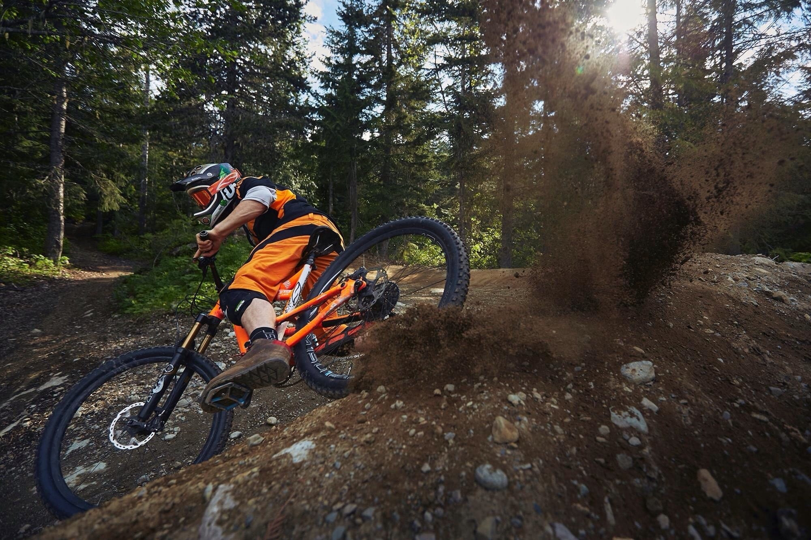

Localizada em Barueri a Bike Akio traz o que há de melhor de bicicletas. Fundada em 2022, a Bike Akio, já é destaque na cidade e conquista novos clientes a cada dia.
Nossa missão é: "Proporcionar o melhor transporte de qualidade aos clientes
Oferecemos as melhores bikes, garantido satisfação e qualidade aos clientes.